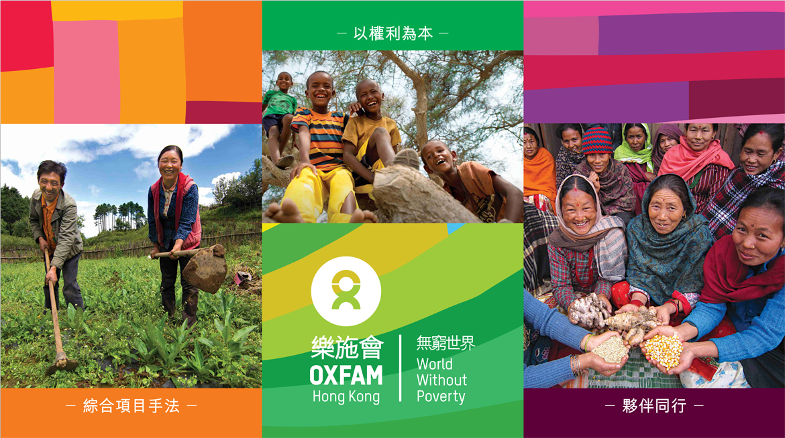
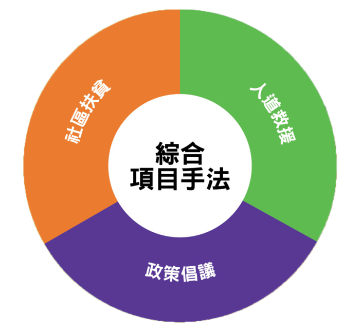

我們的願景
想像一個沒有貧窮、不公和可持續發展的世界，每個人都能享有美好生活。樂施會認為，貧窮源於不公平。 我們努力為女性爭取應有的權利，協助弱勢社群脫離貧窮狀態，亦致力緩減氣候危機為脆弱群體帶來的影響，提升他們的「氣候適應」能力。
我們的使命
樂施會是國際扶貧機構，致力透過政策倡議、社區扶貧及人道救援服務，與大眾共建「無窮世界」。
一起消除貧窮
貧窮是一個複雜且多樣的議題，消除貧窮需要綜合的解決手法。樂施會採用三管齊下的方法：
綜合項目手法
透過政策倡議及公眾教育工作，提升公眾對貧窮議題的認知，同時向弱勢社群賦權及傳授知識，令他們能夠自助自強，維持生計。樂施會亦向受自然災害和戰爭衝突影響的人群，提供緊急援助，並支援他們日後的重建及生計恢復工作。樂施會相信，通過個人改變、制度變革及社區發展，終有一天，貧窮可以絕跡世上。

以權利為本
樂施會相信，每一個人都應有消除貧窮及社會不公的基本權利。生活在發展中國家的弱勢及貧困人因為權力被剝奪，才飽受貧窮困擾。通過倡議、研究和遊說工作，樂施會影響政府政策，保障貧窮人的基本權利，我們相信倡議工作是解決結構性不公問題的強大推動力。
夥伴同行
樂施會認為，各方必須共同努力，發揮協同效應，方可消除貧窮。樂施會了解貧窮人的需要，向貧窮人提供支援，透過與多方協作，在扶貧工作上互相補足。在實踐過程中，我們與貧窮人、捐款人、前線工作者、基層組織、政府部門和社區攜手合作，實現消除貧困的終極目標。
樂施會在中國內地
樂施會在澳門
樂施會在台灣
© 此網站仿樂施會網站製作作教學用途
仿樂施會網站作教學用途
關於樂施會
願景及使命
歷史
總裁的話
扶貧工作
發展項目
人道救援
倡議工作
你的參與
學校活動
公眾教育
樂施之友
最新消息
專題故事
捐款支持
Made with
Offline Website Creator